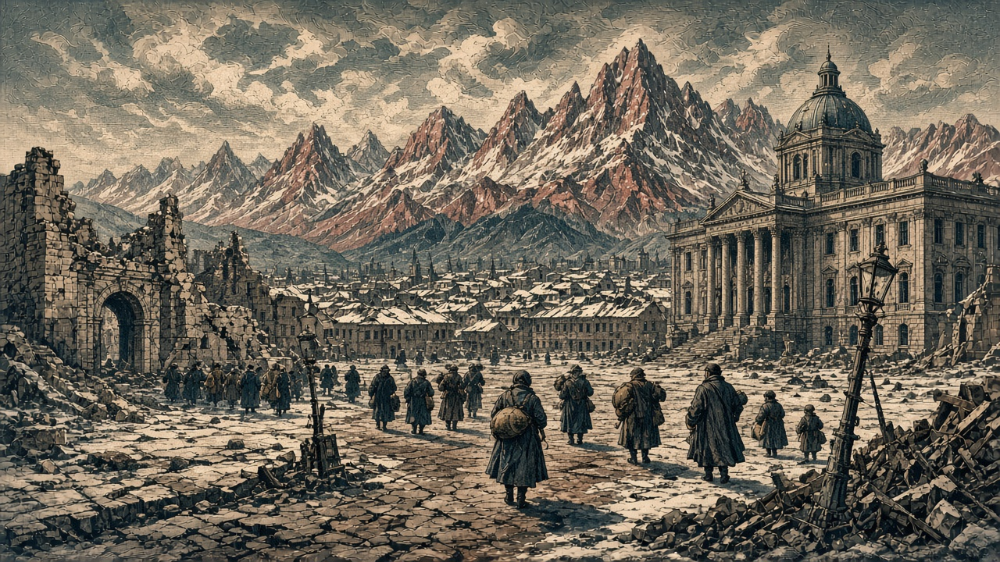

ローテンホルン陥落 ロートヴァルトもなのです領に
紅峰首都と現代都市が同日に落ちる 橙原自治共和国がなのですと開戦 銀嶺の村もチェス領へ

【総合部】第188期、なのです主義人民共和国が紅峰公国の首都ローテンホルン（41,52）を占領した。同じ期に現代都市ロートヴァルト（38,56）も陥落し、紅峰は首都と主要都市を同時に失った。公報では首都の状態が「陥落」に改められ、紅峰領としての登録が外れた。公国は人口三万八千三百人、領土十五区画で戦争を続ける。詳報は3面。
同じ期、橙原自治共和国がなのです主義人民共和国と開戦した。宣戦予告どおり第188期に戦端が開き、今期の損害はなのです三千五百人、橙原二千五百人。橙原は開戦後、なのですと青海共和国の双方へ停戦を打診した。第188期末までに成立した停戦はなく、戦闘と交渉が並行している。詳報は2面・4面。
銀嶺の村が落ちる チェスが前進
チェス＝シロバキア共和国は銀嶺侯国の村（77,28）を占領し、首都モンタルジェントに近い地点まで支配を広げた。今期損害は銀嶺三千八百人、チェス百人。銀嶺は首都を失った状態で村も失い、領土は八区画となった。詳報は4面。国特集は8面。